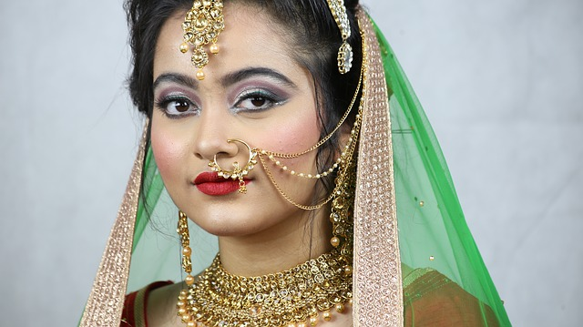

India
Description:
a person of Indian descent, or a native or inhabitant of IndiaLanguages:
Assamese, Bengali, Gujarati, Hindi, Kannada, Kashmiri, Konkani, Malayalam, Manipuri, Marathi, Nepali, Oriya, Punjabi, Sanskrit, Sindhi, Tamil, Telugu, Urdu, Bodo, Santhali, Maithili, and Dogri are the languages that are officially recognized by the Eighth Schedule of the Constitution.Religion:
Hinduism (majority religion), Islam (largest minority religion), Sikhism, Christianity, Buddhism, Jainism, Zoroastrianism, and the Bahá'í Faith, there are other folk religions found in India but these are the most recognized.Food:
Indian food is characterized by subtle and sophisticated use of spices, fruits, grains, and vegetables. The cooking style and presentation differs by regions. Buddhists, Jains, and Hindus are typically vegetarian. Most of the ingredients and styles used are a mix of Persian, ancient Greek, Mongol, West Asian, and New World (aka Americas) food.Northern India uses more milk-based products while Eastern India is famous for their sweets. Fish and rice are considered staple food in Eastern India. Southern India emphasizes heavily on rice while North Eastern India is influenced by Chinese cuisine because of its proximity to the country. In Western India, the cuisine is based on the geography of the each individual state. In Gujarat, they use sweetness as their main profile for food while Goa uses more meat and less spiciness as it was heavily influenced by Portuguese settlers.
Some of the beverages include tea, lassi (a yogurt-based drink), coffee, coconut water, nimbu pani (lemonade), sharbat (juices using petals and fruit), and badam doodh (almond milk).
Fashion:
Jewelry is a very important part of Indian culture. Bead jewelry were worn by the people of the Indus River Valley Civilization. Pachchikam is an older form of Gujarti jewelry that has recently become popular again. Antique jewelry is typically older while Lacquer, Meenakari, and Kundan jewelry originated in Rajasthan but have grown in popularity.Tribal jewelry usually consists of bones and other materials and is worn by the tribes of India. Both silver and handmade jewelry are now growing in popularity. Filigree jewelry is found in other places as well and is renowned for its precision and accuracy. Jadau or engraved jewelry was popularized by the Mughals.
Fashion refers to jewelry that have little wealth, but they are used in plays and movies. Bridal jewelry is one of the most popular types and is typically worn by brides. In North India the jewelry is far more extravagant while in South India the bride is adorned with a more gentle jewelry that is not as heavy as the jewelry worn in North India. Ivory jewelry must be given to the bride before her marriage especially in Gujarat. Gold jewelry is the most common in India because it represents auspiciousness. Navratna and stone jewelry have astrological significance. Temple jewelry adorns the gods and goddesses that are resting in the temples.Clothing has varied throughout the years. Men traditionally wore dhotis or lungis, but now the more modern form of dress is Western clothing (Dress shirts, pants, shoes, etc.) Women traditionally wore salwar suits, saris, or lenghas, but the trend to modern dress is similar to the men.
Arts:
India has a range of artwork. Mughal miniature paintings often glorified the shahs that were ruling, while the older murals of Ajanta and Ellora depict forces of nature.Literature is often based on religion. For example, Buddhist palm leaf manuscripts, Mahabharata, The Vedas, and Ramayana are still popular. Rangoli is an art form that indigeneous to India. The handmade designs are an array of colors made of either flowers or colored powder to decorate courtyards.
Sculptures are also a reflection of religion. Idols of gods and goddesses often located near temples and in the Ajanta and Ellora caves. India is known for its detailed architecture usualy in the form of temples.Dance in India is one form of art that people are most familiar with. Classical dance is used as a form of worship. Mudras (hand symbols) are often used as a form of communication between humans and gods. Some examples include Bharatnatyam, Kathak, Kathakali, Kuchipudi, Manipuri, Mohiniattam, and Odissi. Tribal dances relate to the tribal people of India. They are usually simple and used to express joy. Bollywood is the one people are most familiar with the more modern dances and popularized by movies.
Miscellaneous:
Sports:- Kabaddi is an ancient Indian sport, where players are eligible to play in the Kabbadi World Cup. The two teams have groups of seven, each on their own side. The objective of the game is to cross the other side and get as many players out in a single breath as an offensive play. The defending team must catch the single raider (tagger) and hold them in on the their side until the raider runs out of breath then all the people that were tagged out can come back in.
- Cricket
- Chess
- Archery
- Badminton
- Wrestling
- Soccer (Football)
- Field Hockey